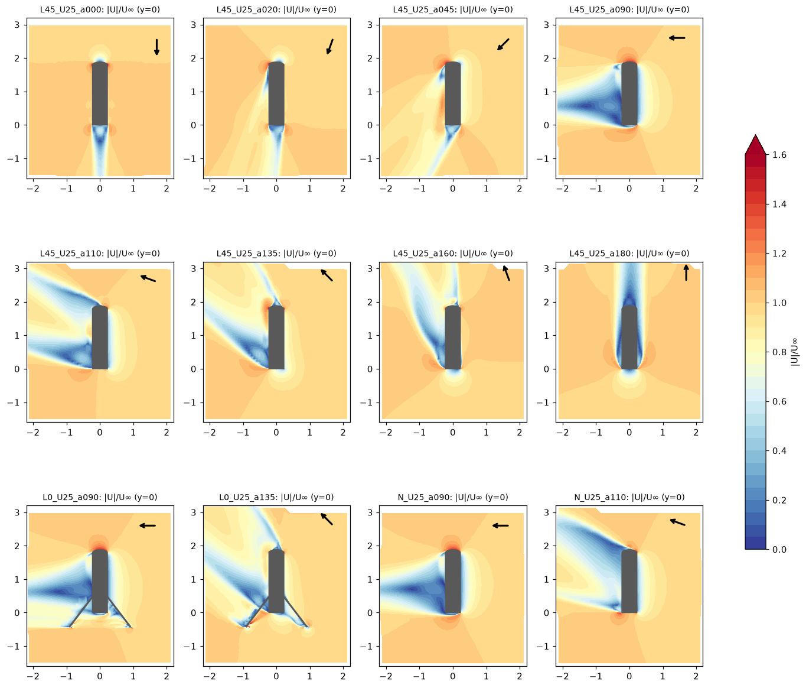
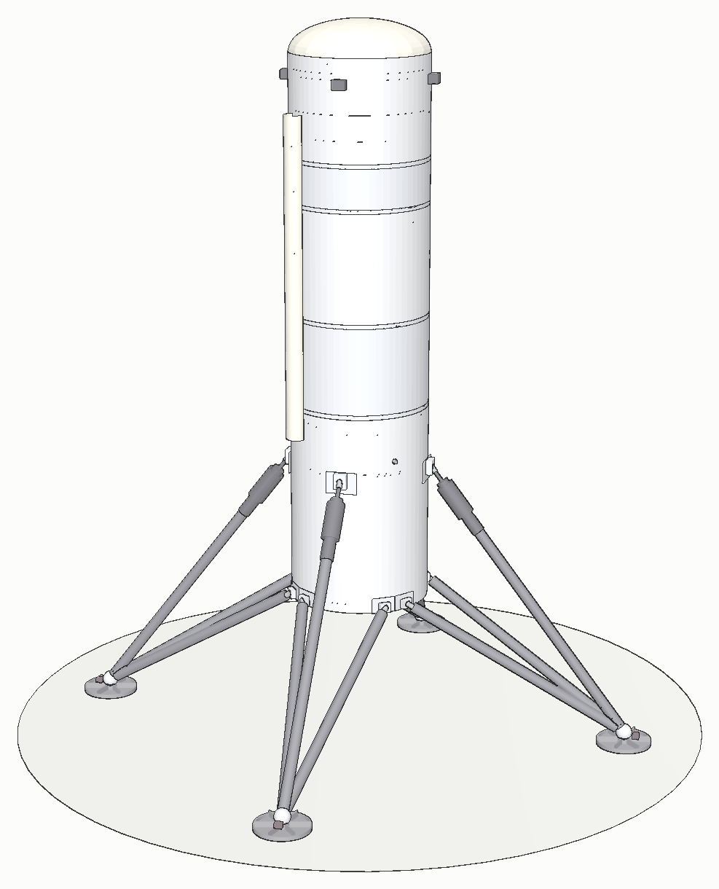
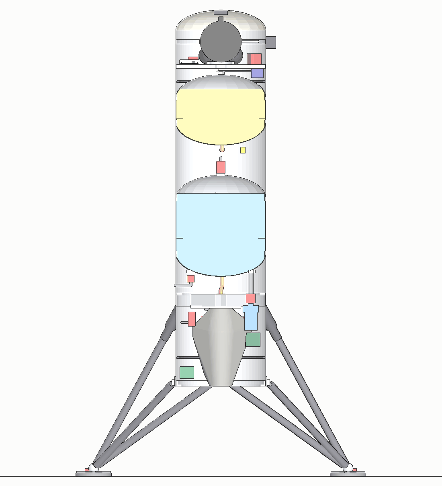
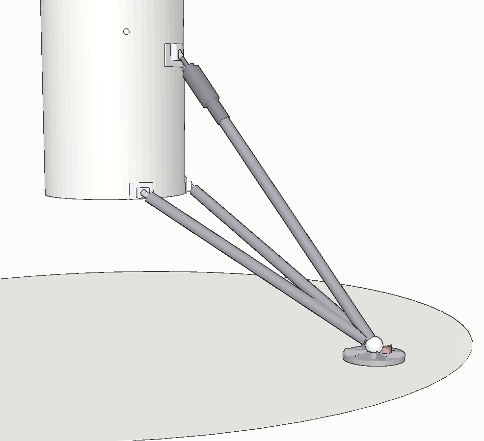

The vehicle is a Phase-0 testbed: a 0.45 m hull, four inverted-tripod landing legs, and one 4 kN-class
electric-pump liquid engine on a two-axis gimbal. The goal of Phase 0 is a controlled hop and landing. It exists as
code before it exists as metal.
Simulation onlyCAD model v0.4Nothing here has been built or testedUpdated 2026-11-10
91.4 kg
dry, CAD best estimate (v0.4), without growth allowance ("about 91 kg dry")
109.7 kg
dry with the 20% growth allowance; the simulator flies this table since plant v5 (2026-11-10)
207.2 kg
at take-off, with 97.5 kg of propellant ("about 200 kg fuelled")
Flight dynamics: a MuJoCo model whose mass properties come from the CAD model and change with
propellant load. It includes a spring-damper leg model with a crushable honeycomb stop, a rate-limited engine and
pump response from a transient engine model, gimbal backlash, and wind with gusts and shear.
Aerodynamics: force and moment tables from RANS CFD of the vehicle with its legs, over the full
0–180° angle-of-attack range, with mesh-convergence and DDES checks.
Structure: finite-element checks (CalculiX) of tanks, legs, thrust structure and engine cooling,
and drop-test campaigns of the leg design.
Guidance and the flight software are on Landing and
Avionics.

CFD velocity magnitude around the vehicle from 0° to 180° angle of attack. Bottom row: with the landing
legs, which carry a quarter to a third of the side force.
Take it apart
A section through the CAD model, nose to feet. Scroll and it comes apart one subsystem at a time.
Shapes are simplified and the engine is drawn generically; heights and positions follow the model.
The whole vehicle
1.9 m, five bays
Nose, forward avionics bay, two propellant tanks with an intertank between them, and an aft bay that holds
the engine, pumps, power electronics and the legs. About 91 kg dry by the CAD estimate, about 200 kg fuelled.
The tanks are the hull: there is no outer shell around them.
01 · Nose and pressurant
Radome and helium
A glass-fibre radome keeps the GNSS antenna and the telemetry link radio-transparent. Under it, a helium
composite overwrapped pressure vessel sits on its own ring frame, held at its equator by a band and four struts.
Its regulator and latch valve pressurise both tanks.
02 · Avionics deck
The flight computer's floor
A ribbed aluminium deck carries the flight computer in its enclosure, the RTK GNSS receiver, the telemetry
radio and the flight termination unit, which has its own battery. The IMU and the avionics battery hang
underneath.
The ribs are there for stiffness: the deck's first structural mode is above 160 Hz.
03 · Tanks
Two tanks that are also the airframe
RP-1 above, liquid oxygen below, in separate aluminium tanks with elliptical domes. Y-rings carry the load from
the skirts into the tank walls at each weld. A ring baffle in each tank damps slosh at the fill level the
vehicle lands with.
The intertank carries the pressurisation lines; an external raceway takes the RP-1 feed and the harness
down past the oxygen tank.
04 · Feed
Electric pumps
Each propellant has its own pump: a brushless motor under a volute, a pre-valve on the inlet and a main
valve on the outlet. Flexible hoses with a loop let the engine gimbal without loading the lines.
Fill and drain valves end in quick-disconnects for the ground side.
05 · Engine
Chamber, injector, gimbal
A regeneratively cooled chamber: the fuel runs through channels in the wall before it is injected. A pintle
injector, a spark-torch igniter, and a cardan joint under the thrust structure.
Two electromechanical actuators push on a ring around the chamber and swing the engine ±10° in pitch and
yaw. A clearance sweep over every corner of that range checks that nothing touches.
06 · Power
A battery that drives the pumps
A LiPo pack feeds the two pump inverters, one per pump, through a power-distribution unit with a pre-charge
resistor and a contactor that the engine controller switches.
The radar altimeter looks straight down from the aft bay.
07 · Structure
Where the loads go
The aft skirt carries everything below the tanks. Crossed box beams and a centre plate take the engine's
thrust and the gimbal loads into a thrust ring, and from there into the frame that the legs attach to.
Doubler plates spread the leg loads where the struts meet the skin; a base frame closes the bottom.
08 · Legs
Four inverted tripods
Each leg has a primary strut with a coil-over shock and a crushable honeycomb cartridge behind it, two
secondary struts, and a foot. Clevises attach the struts to the body; rod ends close the strut tubes.
A switch in each foot tells the flight computer it is on the ground. The leg design went through
drop-test campaigns in simulation before it went into the flight model. The struts are aluminium tubes,
Ø50 x 2 mm for the primary and Ø35 x 2 mm for the secondaries.
Mechanical design
The vehicle exists as code before it exists as metal. Every part is built from the design
files, weighed, checked for clashes and handed to the simulator. Then the structure, the legs and the gimbal are
checked against the loads they will see.

The CAD model, rendered straight from the code. No hand-drawn parts.
01 · Parametric model
Every part comes from a number
The CAD model is a CadQuery program. Hull length and diameter, tank volumes, wall thicknesses,
the leg geometry and the engine envelope are read from the same JSON files that the sizing scripts and the
simulator use. Change an input, and the model, its mass properties and a mass table for the simulator are
rebuilt together; a separate import step brings that table into the flight dynamics.
Parts that are actually designed here (tanks, structure, legs, lines) get their mass from volume
times density. Bought-in black boxes such as pumps, valves, batteries, inverters, actuators and avionics enter as
envelopes carrying their budget or catalogue mass.
118solid parts, each tied to one of 13 budget lines
0unwanted intersections between any two parts
37automated checks pass, with 1 warning and 0 failures
Design filesJSON from the sizing, engine, physics and avionics studies
GeometryCadQuery solids, STEP and STL export, renders
Mass propertiesmass, centre of mass and inertia tensor, dry and at every propellant load
Checksdimensions against the sources, tank volumes, clashes, gimbal sweep, ground clearance
Simulatora mass table, imported into the flight dynamics in a separate step
02 · Mass
91.4 kg dry, 6.3% over budget
The model's current best estimate (CAD v0.4) against the Phase-0 mass budget of 86.0 kg. With the 20%
growth allowance that is 109.7 kg, and since plant v5 (2026-11-10) the simulator flies exactly
this table. Hover a bar for what it contains.
CAD best estimatebudget
Dry mass by group, without the 20% growth allowance. Black-box parts carry their
budget mass, which is why pump power matches exactly; the propulsion overrun comes from the parts modelled in
detail.
The largest overrun is the airframe, at 40% over. Its skin thicknesses are still placeholders that
no structural optimisation has touched yet. The landing legs come in 29% over budget (15.5 against 12.0 kg) with the resized
struts; with the first, thinner struts they were 13.9 kg.
Valves, lines and roll control look light only because the model holds the discrete parts and none
of the brackets, fittings and plumbing. Their budget stays. Avionics is under budget for the same reason: no cable trays
or brackets. The leg fairings studied for the wind problem were dropped and are not in these numbers.
03 · Mass properties
The centre of mass climbs as the tanks fill
Both tanks sit above the dry centre of mass, liquid oxygen below RP-1. Loading them lifts the
centre of mass by about 14 cm and adds over a quarter to the pitch inertia. A table like this, imported into the
simulator, is interpolated as propellant burns. Drag the slider or hover a chart.

CoM
Half-section at take-off fill. The gimballed engine group is drawn as a plain envelope and the
actuators are left out.
Whole vehicle, dry mass with the 20% growth allowance (109.7 kg), engine centred. Heights from the
bottom edge of the aft skirt; inertia about the centre of mass. Static tip-over angle across the edge between two
feet: 27.0° at take-off, 28.6° at the landing load. The dry centre of mass sits
4.6 mm off the axis because of where the pumps and the battery are.
04 · Structure
What the finite-element models checked
CalculiX models of the tanks, the whole hull as shells and beams, the thrust structure and the
legs, loaded with full-thrust flight cases, the drop-test envelope and the leg's load limit, tanks pressurised.
Each bar is the lowest margin of safety found for that item: zero means the part just meets its factor of safety
(1.25 on yield, 1.4 on ultimate).
Lowest margin of safety per item. Bars past +1 are cut off; their value is printed.
Open
One margin is negative and still open. In the two hardest landing cases, the free upper edge of the forward
hull, where the nose joins, reaches −0.24 and −0.28. The vehicle's yaw and
side acceleration push the forward-bay masses into a thin edge that nothing supports. The hull model has no
stiffening ring at the nose joint yet; the helium vessel's ring frame just below it is in the model only as a
mass. Adding a stiff ring at the joint is the planned fix, and it has not been analysed.
Before the leg redesign, the base frame and a tank weld showed negative margins too. A thicker
base frame, doubler plates and the tripod legs brought every landing case on the leg load path and the tanks to
+0.30 or better. Buckling does not drive the design: the first mode is in the intertank, at +6.8 after
knock-down. The tank, buckling and hull-mode results come from the first full-hull analysis; the tank geometry
has not changed since. In that earlier model the hull's own first bending mode was about 100 Hz.

One leg (render of the earlier, thinner struts). The primary strut, with the shock and the
honeycomb cartridge, runs from the thrust ring; the two secondaries come up from the base frame.
05 · Landing legs
A tripod that turns side loads into axial ones
Each leg is three pinned struts meeting at the foot. Any force on the foot splits into three
axial strut forces, so the struts carry mostly axial load. The first design, a truss with a vertical shock at its tip, could not
carry foot friction at all: the shock became a cantilever.
A coil-over shock absorbs a normal landing. Behind it, a crushable honeycomb cartridge caps the
strut force if the landing is worse than designed for. The shock damps far more on rebound than on
compression, so the vehicle does not bounce.
The drop campaign covers a grid of 2640 simulated drops, 1320 at each of two propellant loads, from 0.5 to
3 m/s down and up to 3 m/s sideways; the drops outside the envelope are there to find where the vehicle tips.
800simulated drops inside the envelope, 400 at each of two propellant loads
0tip-overs, bounces, bottomed shocks or crushed cartridges among them
≤ 0.6ground friction the legs need
Lowest sideways speed at which the vehicle tips, over every attitude, slope and friction case, 75 kg
propellant. The shaded box is the design envelope: up to 2 m/s down, 1 m/s sideways, 8° tilt, 5° slope.Peak deceleration inside the envelope against ground friction, 75 kg propellant.
The negative finding is friction. As the leg compresses, the foot slides outward,
and friction resists that slide, so the leg gets stiffer as the ground gets grippier. Peak deceleration inside the
envelope rises from 5–8 g to 17.5 g at a friction coefficient of 1, and the leg would lock solid at 1.6. The
landing surface therefore has to keep friction at 0.6 or below: a low-friction foot sole or a steel landing
plate.
Closed: strut sizing. The first leg sizing left out the struts' own sideways inertia, which the
drop model shows is large near the foot, and the drop model underestimated the leg's swinging mass. With both, the
original struts fall to −0.19 (primary) and −0.42 (secondary). The struts were resized to Ø50 x 2 mm (primary) and
Ø35 x 2 mm (secondaries): the lowest strut margin is now +0.18 (secondary, nonlinear beam-column FE), and the pins at
+0.09 are the lowest margin of the leg, a real current margin. The drop campaign was re-run with the new struts:
0 failures of any kind in the 800 drops inside the envelope.
Open: joint stiffness. A model of the whole tripod puts the first two leg modes at 77 and 83 Hz,
but only with every joint assumed at 50 kN/mm; at 10 kN/mm the first falls to 54 Hz. The legs therefore need
zero-clearance joints with a measured stiffness of at least about 40 kN/mm each, body attachment included, and a
modal test. Leg modes 3 and 4, at 102 and 113 Hz, sit inside the hull's bending band.
06 · Avionics deck
From 27 Hz to 163 Hz
The first deck was a flat plate under about 15 kg of equipment. On it, the helium vessel rocked at
27 Hz, right where a 50 Hz control loop folds its noise. With ribs it still rocked at 49 Hz on its mounting
ring.
Four light struts from the vessel's equator to its own ring frame in the forward hull take that load
straight into the skin. The first mode is now 163 Hz, and it belongs to the helium regulator, not the deck.
First structural mode of the avionics deck with its equipment, three designs, shell finite-element
model.
How far the engine group can tilt in each direction before it touches a fixed part, earlier and
current aft-bay layout, against the ±10° per-axis range it uses. Hover a direction.
07 · Gimbal clearance
Swinging the engine through every corner
The sweep moves the engine group through the ±10° range in both axes, corners included, where the
total tilt is 14.1°. The actuators move with it. At each of 32 attitudes, every moving part is checked against
every fixed one using point clouds and a k-d tree.
8.0 mmclosest approach of the engine group, against a 5 mm requirement
12.6 mmclosest approach of the actuators
On the earlier layout, the same sweep found an actuator envelope already touching the film-cooling feed ring
(0.06–0.15 mm) at ±7°, a clash the older check missed because it left the actuators out. The fix was a re-laid-out aft bay, not a
new engine.
Numbers are from the CAD model v0.4 (no leg fairings, resized struts) with the ±10° gimbal;
analyses as noted. Nothing here has been built or tested yet.
Open on the vehicle
The forward hull's free edge at the nose joint has a negative margin (−0.28); a stiff
ring at the joint is planned and not analysed.
Every leg joint must be zero-clearance and at least about 40 kN/mm stiff, measured with the body attachment, to
keep the first leg mode at or above about 75 Hz (77 Hz at 50 kN/mm); leg modes 3 and 4 sit in the hull's bending band (legs). The strut
sizing itself is closed.
The landing surface must keep friction at 0.6 or below.
The cooling design depends on a film-cooling effectiveness that has to be measured before a regeneratively
cooled chamber is built.
The airframe skin thicknesses are placeholders that no structural optimisation has touched yet.